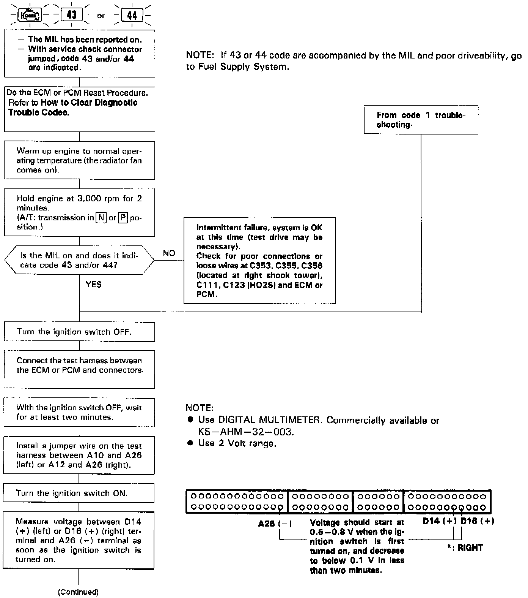
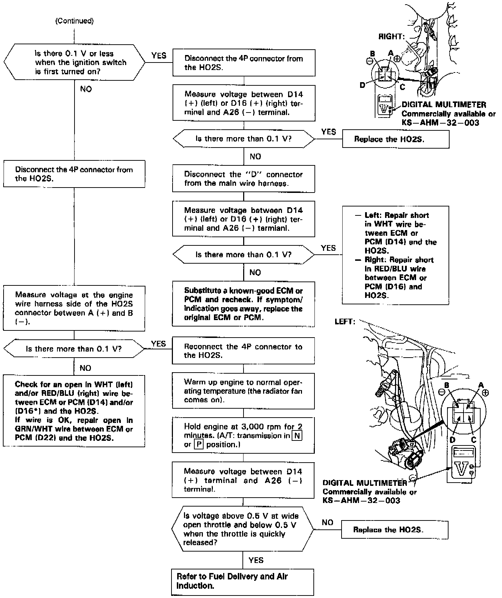

DTC 44


The Malfunction Indicator Lamp (MIL) indicates Diagnostic Trouble Code (DTC) 44: A problem in the Right Heated Oxygen Sensor (HO2S) circuit or a problem in the Right Fuel Supply System.
NOTE: If 43 or 44 code are accompanied by the MIL and poor driveability, refer to Fuel Delivery and Air Induction.